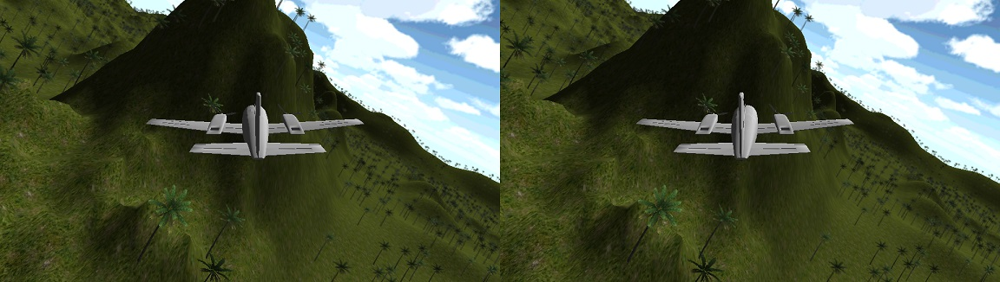
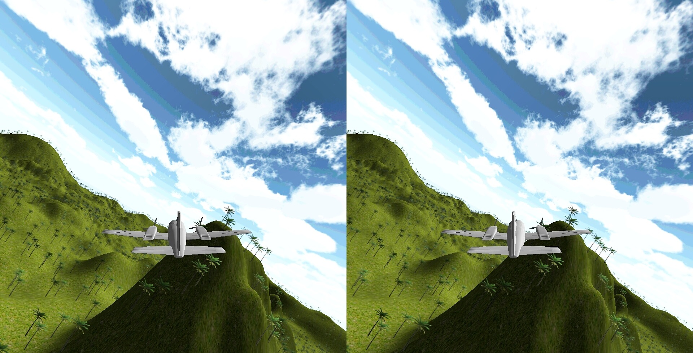

Wacky Flight Sim
January 2015
Team Members: Amoako-Frimpong Samuel, Kwaku Tabiri
Tools: C#, Unity, Dive VR SDK
While experimenting with the Dive VR SDK and Google Cardboard, we decided to develop a virtual reality flight simulator. It was compiled for android using Unity
Development
We used the Durovis Dive SDK for Unity durovis dive for pose estimation and lens distortion. We then imported a 3d model of a Cessna 172, animated the propellers and added engine sounds. A collision box was added to trigger explosions and restart the game.
As it was a demo, yaw was directly tied to the heading of the VR headset, and uncoupled from the roll, causing unrealistic turns. That may fixed in future if we ever get back to it.
